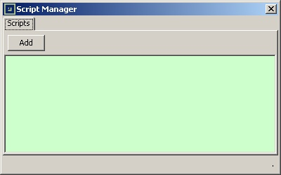

To open the Script Manager, click on the Script
button in the
main interface.

Click on the Add
button, and browse the filesystem to select
of script file. Python scripts should have the .py
extension.
When the script is added to the project, a new entry appears in the
Script Manager:
Click on the Execute
button of a script in order to execute it.
Click on the Delete
button of a script in order to remove it
from the project.
Click on the Open
button of a script in order to open it into
the editor defined by the system for Python scripts.
Each script has an execution class
, which defines when the script
should be executed. The classes are:
On demandattribute is not executed automatically by ModbusPal. The user has to click on the
Executebutton of this script.
Before initattribute will be automatically executed when the project is loaded, right before the MODBUS slaves and automations information are processed. Examples of scripts that should be executed
before initare: scripts registering new generators, bindings, functions.
After initattribute will be automatically executed when the project is loaded, only after the MODBUS slaves and automations information have been processed. Examples of scripts that should be executed
after initare: scripts creating a user interface.
from javax.swing import *
from java.awt import *
class HelloWorldFrame(JFrame):
def buttonPushed(self,event):
self.setVisible(False);
def __init__(self):
self.setTitle("Hello world");
self.setSize(300, 100);
self.setLayout(BorderLayout());
self.setDefaultCloseOperation(WindowConstants.DISPOSE_ON_CLOSE);
# create the Label
self.label = JLabel('Hello, world !');
self.add(self.label, BorderLayout.CENTER);
# create the button
self.button = JButton('OK',actionPerformed=self.buttonPushed);
self.add(self.button, BorderLayout.SOUTH);
# Create the Hello world frame:
frame = HelloWorldFrame();
# Make it visible:
frame.setVisible(True);
# Make it the top window:
frame.toFront();
Please consult the Javadoc of ModbusPal in order to get more information on all the classes introduced in this page.